|
|
|
|
|
Galle - Corruption and Good Guys (and Elephants)
9th February 2009 07 05.0N 072 55 00E Uligan Island, Thiladhunmathee Atoll, The Maldives
This is the second part of a long long email we wrote in Uligan and decided to split into two. You may remember Part One which covered the trip from Phuket, Thailand to Galle, Shi Lanka where we pulled into to make repairs…..
Galle Day 2 – Corrupt Customs and meeting Marlin - a good guy
The next morning, true to his word, Chaminda Gunaskara, the representative of our agents, GAC, arrived bright and early and together we walked down to the Port Authority and Immigration where the paperwork was easily finished off.
Then came Customs. This creature came down to the dock and we ferried him out to the boat. He came down below and started to rummage around – collecting himself 5 cartons of cigarettes and a couple of bottles of scotch. This, he informed us, was the gift we would have to make to him if he wasn’t to turn the boat inside out.
What do you do? This is the first time we’d had such an occurrence – and while in hindsight, we might have put up a bit more of an argument (we did get one bottle of scotch back) – you feel pretty helpless. We later heard of one boat that got a bit heavy with him, and they had their boat stripped. Another, Quo Vadis, told him where to go and had to give nothing.
But this is why Galle gets so few yachts visiting. The selfishness of these few corrupt people is costing their economy a huge amount of money – we believe at least 100 yachts bypassed Galle this year alone because it has this reputation for corruption.
There’s not much you can do to complain while you’re there – you’d just be making a rod for your own back. But now we are away from any comeback, and once back on shore, we will be writing to the Heads of Tourism and Customs for Sri Lanka.
And then there are the good people. Poor Chami – he was mortified that once again one of his charges had been turned over – but even GAC have to tread carefully. Once we’d got rid of the corrupt bastard, we could go ashore and Chami again was a star. He’d organized a company van to run us into town for an ATM and then back to his office so we could check emails and hopefully download the manual and schematics for the furler. Firstly, though, we have to get formal crew passes from the Security Forces and be logged in and out of the main gate.
As we climbed into the van, a large local Sri Lankan came over and thrust a Sim-card in Jean’s hand.
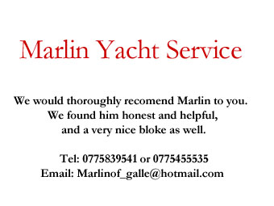 “Hello, Hello – I’m Marlin” he said through a wide beaming smile. “Any thing you need, anything I can help you with – just ask for me – Marlin”
As you’d imagine, we were taken aback, where’s the catch? “What’s with the Sim-card?”
“Use it, use it”, he replied. “No charge. Has my phone number if you need me.”
His last words were said through the closing door of the van – but we’d see a lot more of Marlin.
Discovering Galle
After hitting the ATM, Martin and Wenda went walk about and we went and successfully picked up the emails with the diagrams of the parts we would need to have fabricated. When Chami’s boss heard of our problems, he arranged for their engineer, “V J”, who looks after the GAC tenders to meet up with Peter the next day. With little else to do, Peter and Jean decided to have a look around Galle so Chami dropped them back at the Port Gate to grab a Tuk-Tuk.
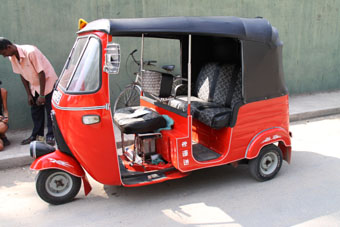 Tuk-Tuks! Glorious little three wheeler taxis, running off a tiny two stroke engine with the driver using motorcycle handlebars. They are everywhere – and their blue smoke exhausts create a haze across the town. But good fun to be in.
At the gate, we got chatting
with Marlin again. We’ve got used to the many many touts
over the last months – all offering to be your friend - so
we are a little leery. But Marlin came over as a “good
guy”, 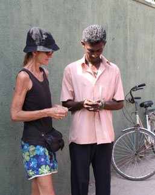
And the Rampart Hotel was worth going to. Galle is a split town – half is a standard busy, bustling and dusty sub-continental town. The other half is within the old Galle fort, a vast defensive position started by the Portuguese and finished off by the Dutch – then taken away by the Brits. It truly is a walled city in its own right, crammed full of old buildings and narrow lanes and alleys. The Rampart overlooks the vast earthworks and massive gun emplacements to the sea.
As we drove into the Fort, there were banners everywhere for the Galle Literary Festival which was running at that time. So after our very late lunch, Mr D took us down to the Fort Hotel, one of the venues, where we grabbed a programme. Sadly, most events were already booked out, but there were a few freebies.
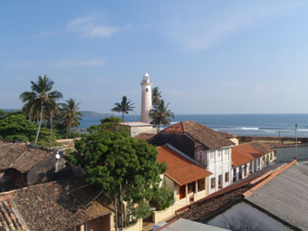 Jean had spotted Colin Thubron, a travel writer, walking down a street earlier in the day (she had attended one of his sessions at the Perth Writer’s Festival a while back) and was keen to attend his session that night. So Mr D cut his tour short, ran us back to the Port and waited for us while we cleaned up and changed.
Leaving a note taped on the dinghy for M & W, we headed back and managed to talk our way into Colin’s workshop at the Fort Hotel. It was a very enjoyable evening listening to him doing a Q&A on his travel writing. Galle was looking good.
Galle and the Tsunami
When we say Galle was looking good, it was for us at that time. But a little over 4 years earlier, it was a very different story on Boxing Day.
The shape of the bay funneled
the tsunami straight into the new town. The waters reached
over 12 feet 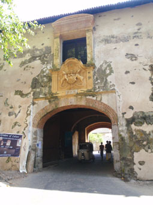
While on the surface, Galle looks as if it is recovering, it is still traumatized. There are many empty blocks where the ruins of homes have been cleared away but there was no-one left to re-build. The harbour still shows broken wharves and jetties where huge blocks of concrete were ripped apart and thrown hundreds of metres in land. GAC had two 100ft tenders they used to ferry crews and supplies to ships offshore, and both ended up high and dry – one more than a mile inshore. They had been repaired enough to refloat and were moored close to where we were, but they were still being worked on to bring them back into commission.
As soon as people knew we were from Australia, we were welcomed as old friends. It appears that Australian aid was especially important in the area, supplying emergency accommodation and rations. And, being a cricket mad country, the people were especially touched by the efforts of the Australian Cricket team in raising money to help to rebuild the Galle Cricket Ground where many test matches have been played and which takes pride of place under the ramparts of the fort. The ground had been left covered with busses, cars and tuk-tuks swept off the nearby busy road and roundabout.
And sadly, everyone we spoke with had lost members of their families.
Waiting for Parts and “The Wiggle”
The first job was for Peter to head back up the mast and make various measurements. With those in hand, he spent a couple of hours dragging up old TD lessons from school to drawn up some plans, then paddled across to the GAC tenders and managed to track down VJ, the engineer.
VJ was the perfect Sri Lankan older gentleman engineer – shortish, grey haired thinned on top, a short grey beard, civvies for him, no overalls, bright eyes and a beaming smile – and a proponent of “the wiggle”.
The wiggle – we saw it all through Sri Lanka - it’s a gentle shaking of the head, not as westerners do when saying no, but a movement than encompasses up and down, left to right, back and forth. And so quick that at first we weren’t sure if we were seeing it. It took a while, but we realized it’s a sign of affirmation – “Yes, I understand”, “Yes, we can do this”, “Yes, this is amusing”, “Oh, at last, I understand you” – and always given with a gentle smile. It’s a very welcoming piece of body language.
Accompanied by wiggles, VJ
went through the drawings and from the few questions he
asked, it was clear he understood exactly what we wanted.
The down side was they would take 5 days to make so Peter
headed back to Hinewai for a crew planning session to fill
those days. 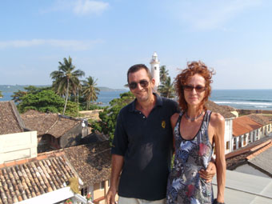
Playing trains in Sri Lanka
The first couple of days were
spent working on Hinewai to mend all the little things that
break or need attention after a passage. Jean was rampant
with a needle, mending small seams on the sails and covers 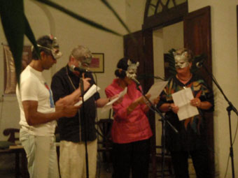
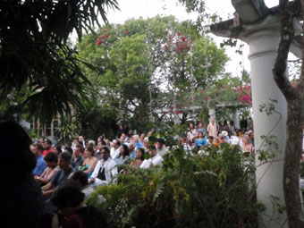 With all the work done, we all thought we’d head inland for a couple of days. “Quo Vadis”, a Kiwi yacht we’d become friendly with in Thailand, was now moored alongside us and Mark, her skipper, kindly offered to keep an eye on Hinewai.
Martin and Wenda headed east, catching local buses around the coast and up into the hinterlands. We thought we’d head north into the mountains to Kandi – which would need a train journey the next day.
Up at 5am to meet Mr D and his tuk-tuk at the Port gates, we headed to the station for our 6.30 train. And it was heaving, but so politely. We joined the orderly queue for our tickets to Colombo where we would need to change trains for Kandi – and got real train tickets – those little stiffened cardboard tickets we knew as kids. They even had little bits clipped out of them as you went onto the platform.
Once on the platform, we were accosted by a young man, who gestured for us to follow him down to the best place to get onto the train. These men are deaf and are allowed to help like this to earn a few Rupees’s a day in tips. Sure enough, when the train came in we were perfectly placed for our 2nd Class carriage – but a little slow. By the time we got aboard, all the seats had long gone – but a young Sri Lankan man gave his window seat up for Jean. Peter was stuck in the corridor at the end of the carriage, but with the doors wide open, had both a nice breeze and a great view as he stood the 3 hours to Colombo.
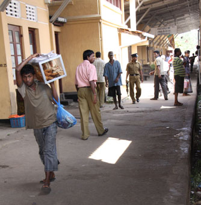 The system was everything you expected – 2nd Class had padded seats, but no air-con (windows you were allowed to open!), everything looked tired, needing a lick of paint – but underneath it was well maintained. And well used – the train was packed.
At every stop, hawkers wandered up and down the platform selling drinks and snacks through the windows – and many joined the train for a few stops, up and down the length of the train before getting off to catch another sales opportunity back. They had wonderful song-like calls to let you know they were coming – where a voice couldn’t, these calls carried down the length of a carriage or two, giving people a chance to get their money out. And, all the foodstuffs were so fresh.
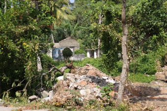 The line runs alongside the coast offering view of the azure blue Indian Ocean and long sandy beaches, interspersed with small villages and hamlets of fishermen. Sadly, many of these also showed tsunami damage and, poignantly, unlike Galle, here in most cases the rubble remained (even though this was the west coast, the wave had swept around the bottom of the island).
As we got closer to Colombo, we started to see a very strong military presence – many small naval vessels moored close-inshore and armed marines (?) every 500 yards along the rail-line. A local explained this was because Independence Day was looming – always a prime terrorism target.
Once in Colombo, we de-trained and went in search of the ticket office. The station overwhelmed your senses – a vast mass of people seemingly milling about, but when you looked carefully, you could see the flow being log-jammed at the exit where armed soldiers were checking bags and ID. Starting to understand how toothpaste feels, we were squeezed towards the exit where we realized we’d managed to forget our Passports – some sweet-talking from Jean got us through.
Having bought our tickets, we toothpasted ourselves back onto the platform and after a quick coffee, fought our way onto our next train and ensured we had seats.
While the first train was
coastal, this train to Kandi is a mountain train with two
giant engine units at the front. Across the small plains
behind Colombo, only one unit was working, but as we started
to climb, the thunderous rumble from the front increased
noticeably as the second unit came on line. We could hear
this because we had the window right down and were hanging
out of it watching the landscape change from sub-tropical to
temperate as we climbed, soon hanging off the side of what
were either very big hills 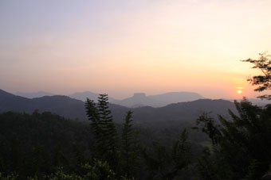
As we climbed, the views opened up into long deep valleys and hills/mountains ranging into the distance, covered with plantations of rubber trees and later, tea.
Sadly, we knew we were going to be tight for time and so would need transport to see even a fraction of what we wanted (this was primarily elephants). Once in Kandi, it was time to find a tout – Marlin had advised us of how to go about it up here and what to expect to pay. And sure enough, as soon as walked out of the station, a flock of touts descended, offering transport, restaurants and accommodation. After some negotiation, we chose a very nice gentleman and his slightly run-down, but air conditioned people mover.
Our first stop though was a herb and spice farm. These are endemic around here, not only catering for the tourists, but supplying all over the world. Of course, our driver knew just the one, and we spent a fascinating hour being shown around by a young guide explaining how they used their various herbs and spices in lotions and potions. At the end, there was the expected try and buy, but Jean already had a fair idea of what she wanted so we were able to keep the purchases small.
Then onto the elephants. With the onset of mechanization, elephants are no longer used as extensively as they were, but they are not like an old tractor that can be scrapped – they live such a long time. So there are a fair few “elephant hospices”, where redundant elephants live out their years. Some are small, looking after just a few elderly elies; others are big, big – running breeding programmes alongside their care function with the aim of re-populating wilderness areas with “wild” elephants.
The one thing they have in common is that they rely on tourism and charity to operate.
Our first stop was one of the small operations with just 8 elephants. It was a very sad place, most of the elephants were elderly and a couple were clearly on their last legs. But the care and love the people here showed was so touching, watching a mahout hand feeding a very thin old lady whose teeth had worn down so much she could no longer eat hard food. The manager sadly said that they were about to euthanize her since her quality of life would deteriorate quickly now. Another couple of elephants had open wounds on their hips where they continuous rubbed against trees to try to alleviate the pain and discomfort of their arthritis. While we watched their mahouts replacing the dressings, the manager said that these wounds would never heal and their days were numbered as well.
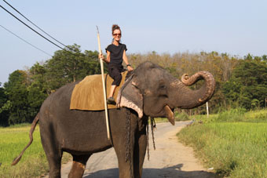 In a corner of the property, he showed us a dozen mounds, giving us the names of each elephant buried there. As one dies, another arrives.
In addition to gifts, the centre makes money in two other ways. You can stay a week and “become a mahout”, working closely with your own elephant and its full time mahout, learning the commands and how to control it.
The other income stream was elephant rides on one of the two younger elephants– and how could Jean resist. 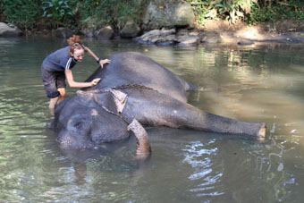 Quicker than a ferret up a trouser leg, she was astride her own elephant and off on a gentle 15 minute wander. Peter followed along on foot, camera to hand – the elephant was a real ham, posing for shots.
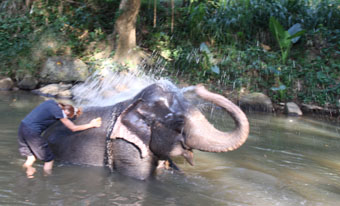 At the end, the elephant needed a bath and so Jean helped lead it into the river where she gave it a good scrub with a coconut husk. Now, not saying it was a set up, but she was then soaked by the elephant throwing a trunk full of water over her.
Then it was one of the larger elephant support centres with a couple of hundred guests. If the first centre was home-spun, this is very professional, covering several hundred acres. It was getting late by the time arrived, but we were just in time to watch some of the orphan babies being bottle-fed. Petulant babies – complaining bitterly if another was being fed even if they had just had their bottles.
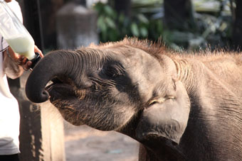 Then it was back to Kandi where we checked into our hotel and mad a made dash to get to see the Buddha’s Tooth Temple, where we were just perfectly too late to get in. So it was back to the Queens Hotel, one of the relics of the Empire, for a couple of drinks, a meal in their tired dining room – we were in bed by 10 with an early morning call booked for 4am.
4am! A horrible time, but with the only straight through train to Galle leaving at 5.30am that morning, we had no option. And as it turned out, were we glad we had had an early night when we arrived at the station to discover there were no trains going through Colombo that day. With Sri Lankan Independence Day the next day, the security forces had had a sniff that there might be a terrorist event so had decided to close down the rail system in Colombo.
Since we’d missed the only direct coach to Galle (that left at 3am), we had no option but take the train as far as it went – the ticket clerks, who had only discovered the happy news about Colombo when they got to work that morning, thought there was a fair chance there might be busses put on, but couldn’t promise anything.
We arrived where the train terminated to a scene of mass humanity. The platforms were solid and we had to fight our way off the train. People were jumping onto the tracks and trying to walk down the line towards Colombo, only to be turned back by a platoon of heavily armed soldiers. We joined the mass that was inching down the platform and up the stairs. At the top we were sucked left – we had no idea if that was the way we needed to go – but we had no option, you couldn’t go against the flow.
Once spat out into the ticket area, we were lucky enough to be accosted by the English-speaking Major in charge of all the armed soldiers – he must have seem the look of utter “Oh God, now what do we do” on our faces. Yes, there were connecting busses to the other side of Colombo where we could get another train to Galle. He waved a hand towards the road – “Out there – ask!”
As ever, once outside we turned left – when we should have turned right. The place we had to get to was one of those Sri Lankan place names with numerous syllables, but eventually someone understood our pronunciation and directed us back past the station. Buses were pulling up with no indication of where they were going so we’d join a queen and keep saying the station’s name and balance the “Yes”s and “No”s. More “Yes”s we’d stay with the queue and ask the driver – if he said NO, we’d then have to fight back against the crowd trying to get on the bus.
At last, the driver smiled that wonderful wide Sri Lankan smile with his bright white teeth lighting up the bus. “Oh Yes!” Peter relaxed his death grip on the doorway and we were swept into the bus (Peter tripped over a tiny middle aged lady – he swears she came in through his legs). Have you ever seen that film of the people pushers in Tokyo – there to cram as many people into a train as possible? Well, the Japanese could learn a thing or two from Sri Lankan Buses. Once we were packed in, our feet almost leaving the ground with the press of people, we wouldn’t have been surprised to see more passengers crowd surfing in – there was a good 18 inches of unfilled bus above our heads.
Finally, we pulled away for a memorable hour long bus ride. For the first half hour, the driver kept picking up more people (the tiny lady by this time was under Peter’s left armpit, using sharp elbows on him to try and get more room), but at last people started to get off, leaving the bus like peas popped out of a pod. How they got to the door was unclear although there was a sort of Brownian motions going on inside the bus. Soon, we were able to draw a full breath and by the time we got to the station, Jean even had a seat.
The rest of the journey was anti-climatic. There was hardly anyone else at the station (maybe those people being popped out of the bus hadn’t wanted to get off?) and we had a set of four seats to ourselves. Jean amused herself trying to photograph things as they whizzed past (Ah, motor drive) while Peter fought off a very persistent, but very distinguished looking middle aged tout. After the usual “Where are you from? Oh, I have friends there. How do you like Sri Lanka?” questions, Peter’s answers soon became the usual “No, we don’t need transport/hotel/car/restaurants/accommodation (delete as required) in Galle”. The tout, who vaguely reminded us of Nauru, would sadly shake his grey haired head and move off – only to return 15 minutes later and start again. He even came up to us as we left the station with “Welcome to Galle. Are you sure you don’t need ….. etc etc”.
It might seem daft to have spent over 15 hours on trains (and a bus) to spend 8 hours awake in Kandi (plus 5hrs sleep), but then, as someone once said, it’s the journey that’s important, not the destination. What a lot of bull, but it was great fun.
We got back to the boat about 5 and after a quick rest and shower, popped out to the Summer Garden, a salubrious restaurant/bar where we’d arrange to meet Marlin for a drink. He was there with Mr D and his team and after a couple of beers and spicy dishes, introduced us to the local whisky – which came in a bottle that looked suspiciously like a Johnny Walker square bottle but with an offset green label.
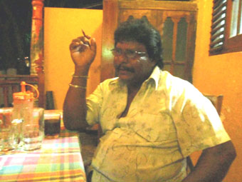 It was one of those special evenings – as the whisky bottles came and went, we learned about Marlin, his life and dreams. His full name is Henry William Jayasuriya, but gained his nickname because as a child he would swim and scrub the bottom of the few yachts that would arrive in Galle – staying down as long as possible, when he came up, he’d come up fast – and one day some American yachtie said he looked just like a Marlin leaping and the name stuck.
He’d worked around the world,
crewing and skippering yachts, but had returned to Sri Lanka
to be with his family.
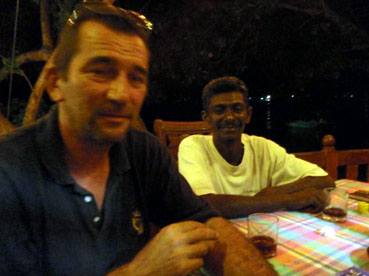
Finally, Mr D, who’d been careful with what he drank, ran us back to the boat where we blearily greeted Martin and Wenda before we collapsed into bed.
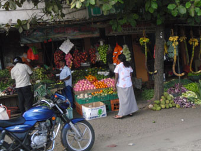 We were due the parts early the next day so Jean and Wenda went off shopping while Martin and Peter waited – and waited – and waited. VJ finally called Peter over late afternoon, but it was worth the wait – the parts were beautifully machined and perfect. Peter zipped back up the mast (twice, one part need a slight filing to allow for the head of a rivet he’d just put in) and soon had the repair completed. By the end of the day, Hinewai was all ready bar re-fueling so it was back to the Summer Garden for a leaving dinner with Marlin.
Marlin makes his money from supplying goods and services to yachties. While we didn’t need anything from him, he became a good friend. Chatting about his business, looking at what he charges for bits, we found him to be scrupulously honest and wouldn’t hesitate to recommend him to anyone. His email is marlanof_galle@hotmail.com.
Only two jobs remained. Signing out from Sri Lanka and refueling. The former was easy with the help of Chami again – the latter was interesting.
To get the fuel from the local petrol station to the yacht, we hired a mobile tanker. How to describe it? Imagine an industrial strength rotivater, two small sized tractor tyres at the front, the rotivating blade behind. Remove the blades and hitch the engine and front wheel bit to a trailer via a bearing so you can steer with the long T-Bar from the engine. Drop a 2,000ltr tank in the trailer, take one yachtie (Peter) with you on the bench seat at the front of the trailer.
Get to the garage and find out that the Credit Card system was down in Galle, drive Peter back to the boat to get his debit card, go to an ATM for cash, fill the tank and talk your way past security to the GAC wharf.
Next move Hinewai alongside one of the GAC tenders, run a long pipe across their decks from the tank, turn it on and out comes black sludge while Jean screams “Close the tap”. While we’d checked the tank was clean before filling it, we hadn’t checked the hose. Fortunately, we filter everything before it gets to the tanks and the filter caught most of the crap, but we still ended up wasting 40 ltrs before it ran clean (Of course, that our loss, not his) and have had to change our engine fuel filters.
Worse, it left us 40 ltrs
short and we had to sweet talk our way out of the Port to
get a top up (remember, by this time we had officially left
the country), but it meant Jean had a chance for a last chat
with Marlin as Mr D ran Peter round to a garage. 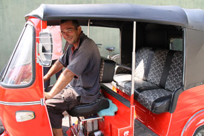
At about 4pm, we called up the Port Authority to check the boom was open, dropped back from the tender and headed off from Galle and Sri Lanka.
While it had been an unplanned stop, we had had a ball in one of the nicest countries and with some of the nicest people we have met so far. It is a tragedy that so few yachts call there, but until Sri Lankan Customs clear up the corruption, we can’t see any change. But if you are thinking of going there, do! It is worth all the hassle.
We started this in Uligan and Peter’s typing these last words about 100 miles NE of Aden. The stories of the Maldives, the long passage across the rest of the Indian Ocean, reaching Salalah in Oman (and the Oasis Club and its steaks), joining the Vasco da Gama Rally and the trip through Pirate Alley to Aden will have to wait.
What’s a little mind boggling is we’ve now travelled 11, 400 nautical miles and crossed 9 time zones since Melbourne. Only another 1,200 nm to the Med – and no more time zones.
Hugs
Peter & Jean
14d 54 898N 040d 50.780E Sat 14th March 2009 (Yes, getting all this finished while passaging the Red Sea – we are so behind).
Next Log Page: Galle to Salalah, via The Maldives
|
|
|
|
|
|
|
|
The Crew The Route The Yacht The Log Guestbook Links Contact Us |
|
|
|
|
|
Home |
|
|
All Original Content of this Web Site Copyright © 2000, 2001, 2002, 2003, 2004, 2005, 2006, 2007, 2008, 2009 Ocean Odyssey Pty Ltd |